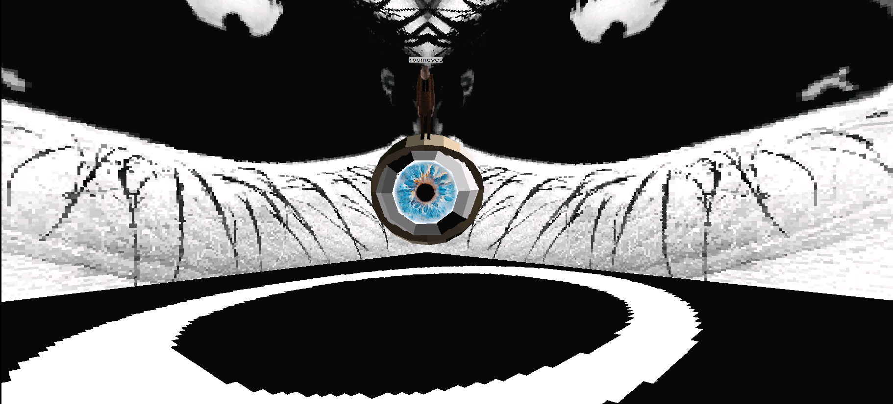

🌍 Worlds Archive
Explore archived Worlds.com locations, including official and community-created worlds preserved by The Worlds Archive.
Worlds Archived: 10
Los mundos marcados con "Ver fuente" están documentados en la comunidad de Worlio, pero su enlace WorldsMark exacto no ha podido verificarse todavía — visita la fuente para conseguirlo directamente.

Nessu's Gallery
Creator: Nessu
Year: 2026
Status: Active
Type: Community World
A community-created world by Nessu featuring artwork, creative spaces and community exploration.
WorldsMark:

Roomeyes Is Watching You
Creator: Roomeyes
Year: 2026
Status: Active
Type: Community World
A mysterious community world created by Roomeyes. A strange and unsettling place centered around a giant eye, giving the feeling that you are constantly being watched.
World File:
Download WorldLiminal GZ
Creator: Nessu
Year: Sin confirmar
Status: Documented
Type: Community World
Una versión liminal, de estética vaporwave, del clásico GroundZero (GZ) de Worlds.com, con secretos, elementos interactivos y música ambiental.
Ver fuenteFuente: portfolio de Nessu (xxnessuxxworlds.neocities.org)
MedioCielo
Creator: Nessu
Year: Sin confirmar
Status: Documented
Type: Community World (encargo)
Un mundo creado por encargo, explorable y lleno de secretos, referencias y música, según lo describe su propia creadora.
Ver fuenteFuente: portfolio de Nessu (xxnessuxxworlds.neocities.org)
Phoenix Wright: Ace Attorney (Tribunal)
Creator: Nessu
Year: Sin confirmar
Status: Documented
Type: Recreación
Recreación de la sala del tribunal de la saga de videojuegos Phoenix Wright: Ace Attorney, construida dentro de Worlds.com.
Ver fuenteFuente: biblioteca de la comunidad de Worlio
Freddy Fazbear's Pizza (FNAF 1)
Creator: Nessu
Year: Sin confirmar
Status: Documented
Type: Recreación
Recreación completa del mapa de la pizzería de Five Nights at Freddy's (el primer juego) dentro de Worlds.com.
Ver fuenteFuente: biblioteca de la comunidad de Worlio
Temple of Time
Creator: Nessu
Year: Sin confirmar
Status: Documented
Type: Recreación
Recreación del Templo del Tiempo de The Legend of Zelda: Ocarina of Time, construida dentro de Worlds.com.
Ver fuenteFuente: portfolio de Nessu (xxnessuxxworlds.neocities.org)
Silicone Town
Creator: Roomeyes
Year: Sin confirmar
Status: Documented
Type: Community World
Un mundo misterioso creado por Roomeyes, hogar de una instalación de investigación llamada "9-STEPS" y una torre de radio. Documentado por la comunidad en vídeo.
Ver fuenteFuente: vídeo de la comunidad "welcome to siliconetown by roomeyes || worlds.com #6" (YouTube)
Excel 95 Easter Egg (recreación)
Creator: Wirlaburla
Year: Sin confirmar
Status: Documented
Type: Recreación
Recreación dentro de Worlds.com del famoso easter egg del simulador de vuelo oculto en Microsoft Excel 95.
Ver fuenteFuente: biblioteca de la comunidad de Worlio
matrixtest.world (Worlds Shaper Tutorial)
Creator: Aujourd
Year: Sin confirmar
Status: Active
Type: Mundo de práctica
Mundo de prueba creado por su autor como tutorial de Worlds Shaper (la herramienta de creación de mundos). Enlace verificado directamente.
WorldsMark:
Fuente: aujourd.worlio.com/screens.html